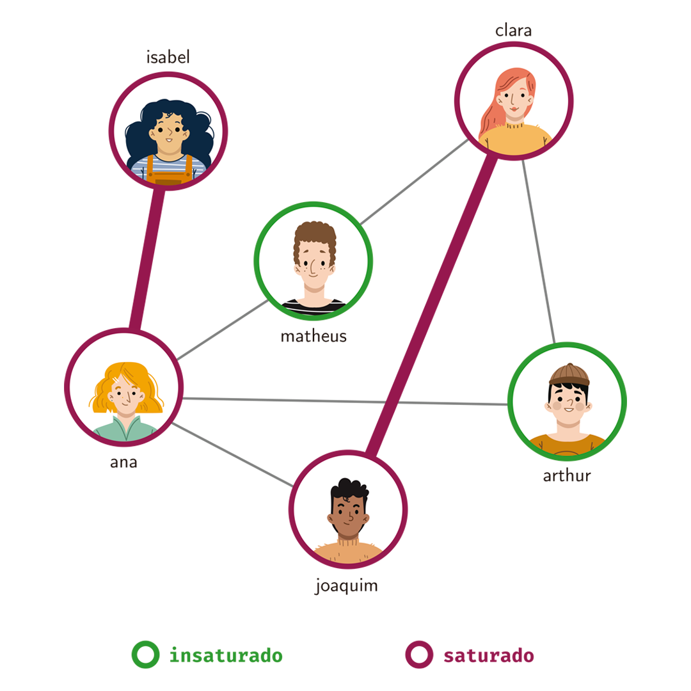
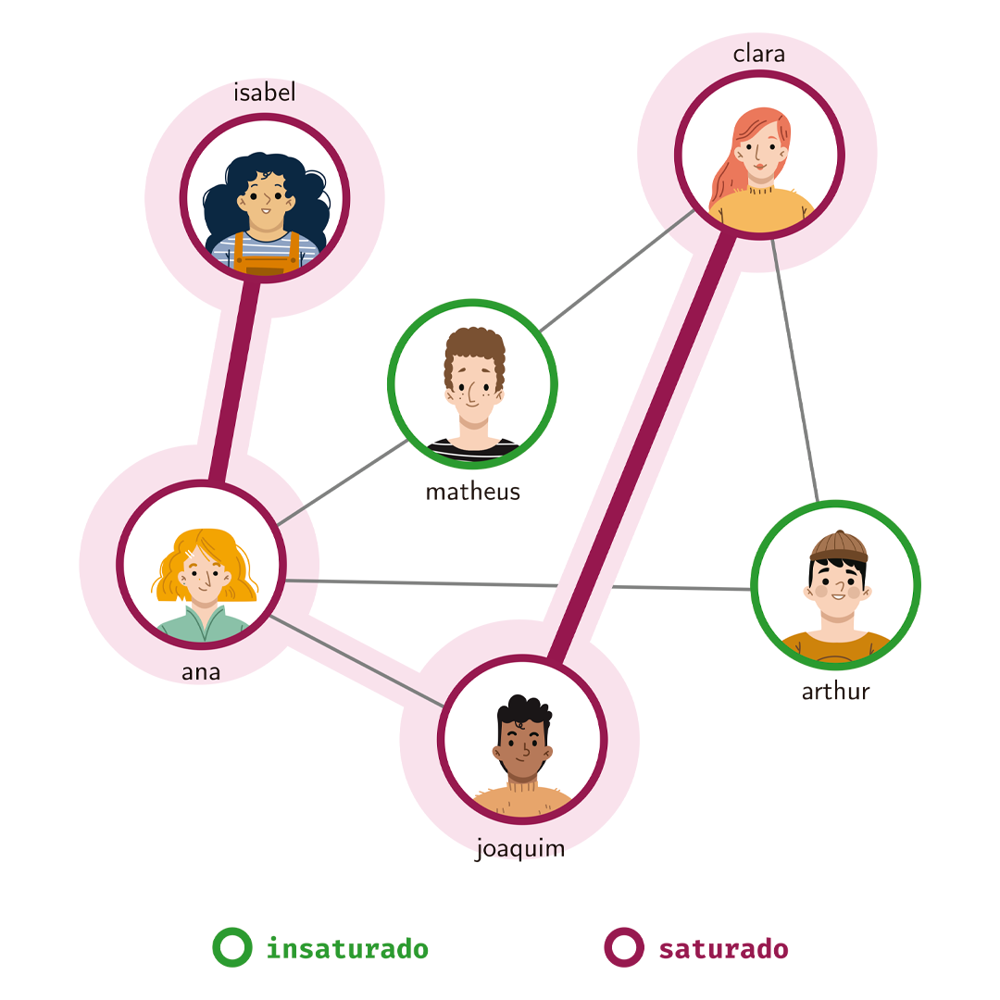
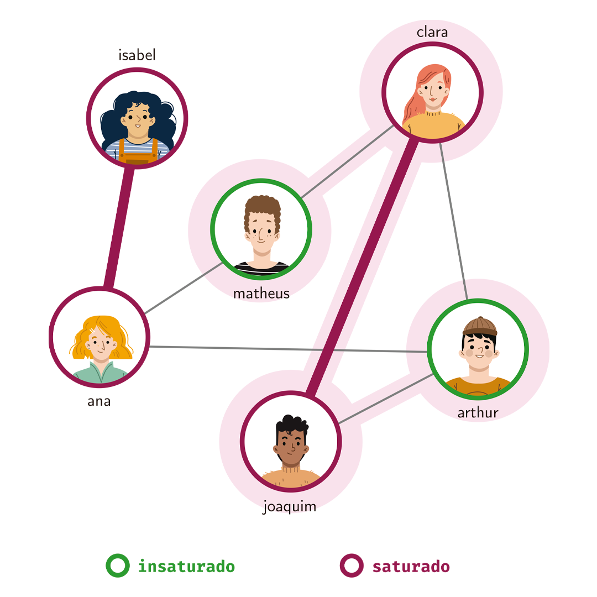
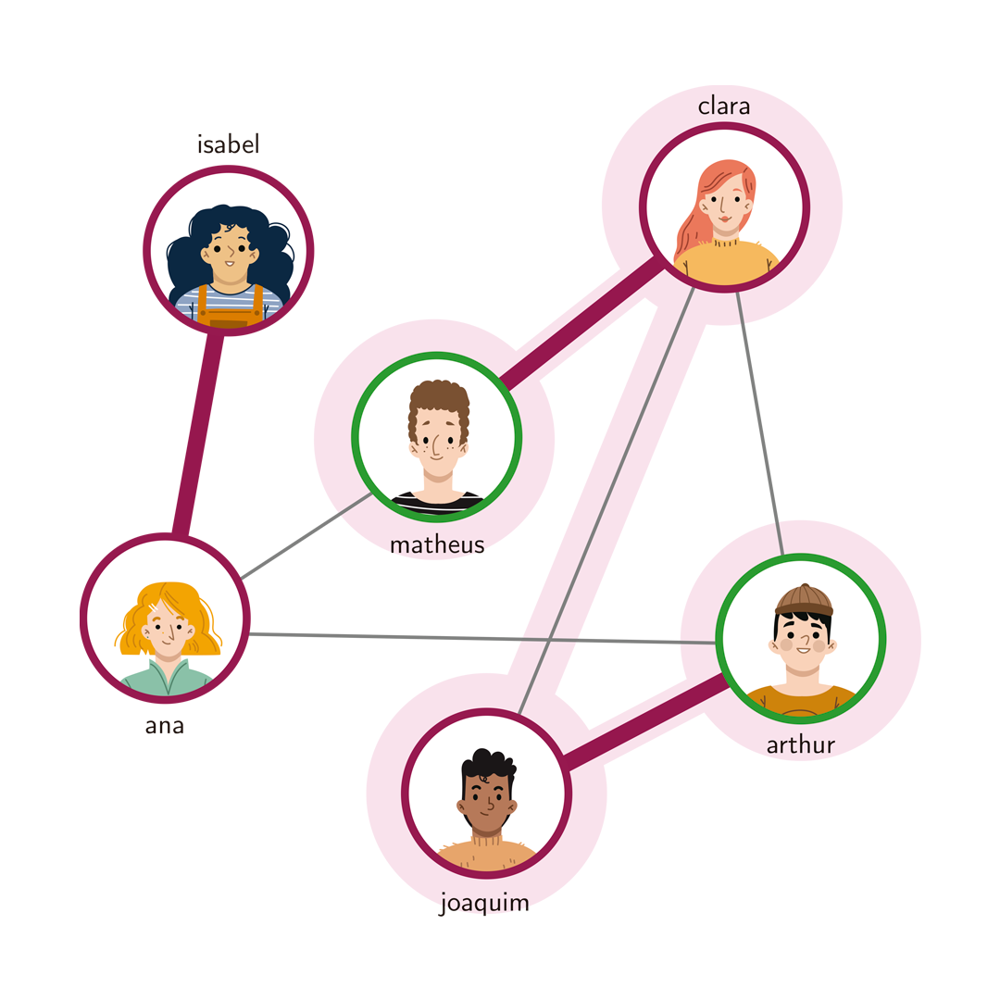
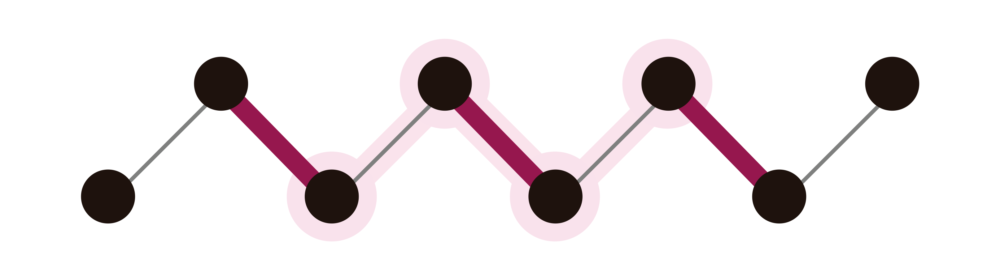
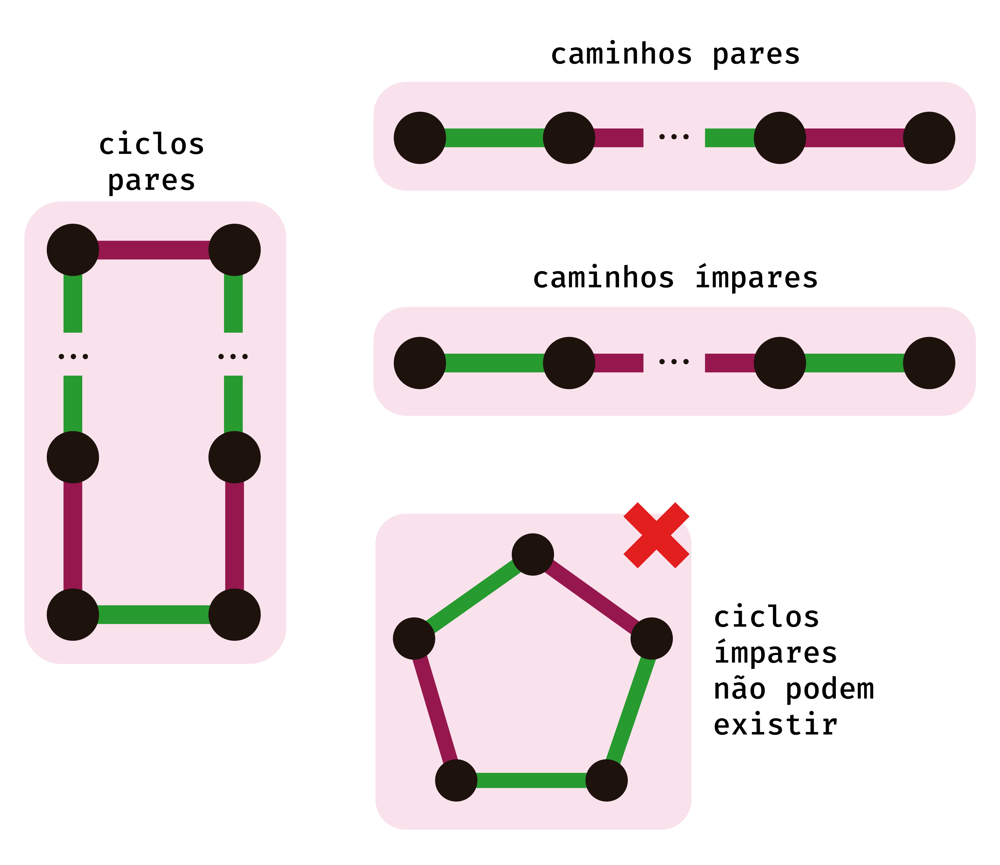
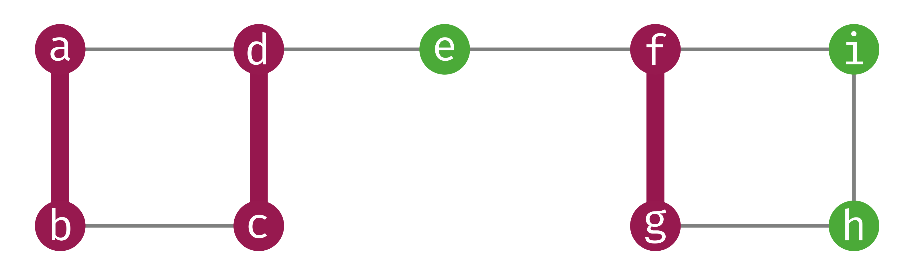
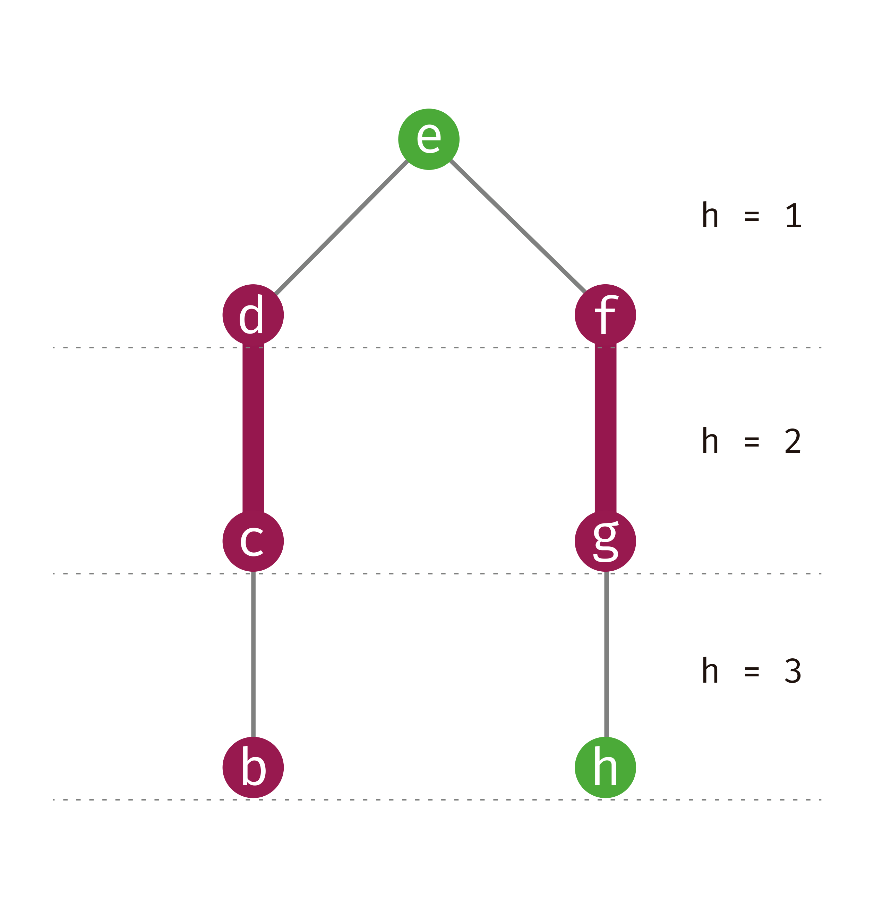
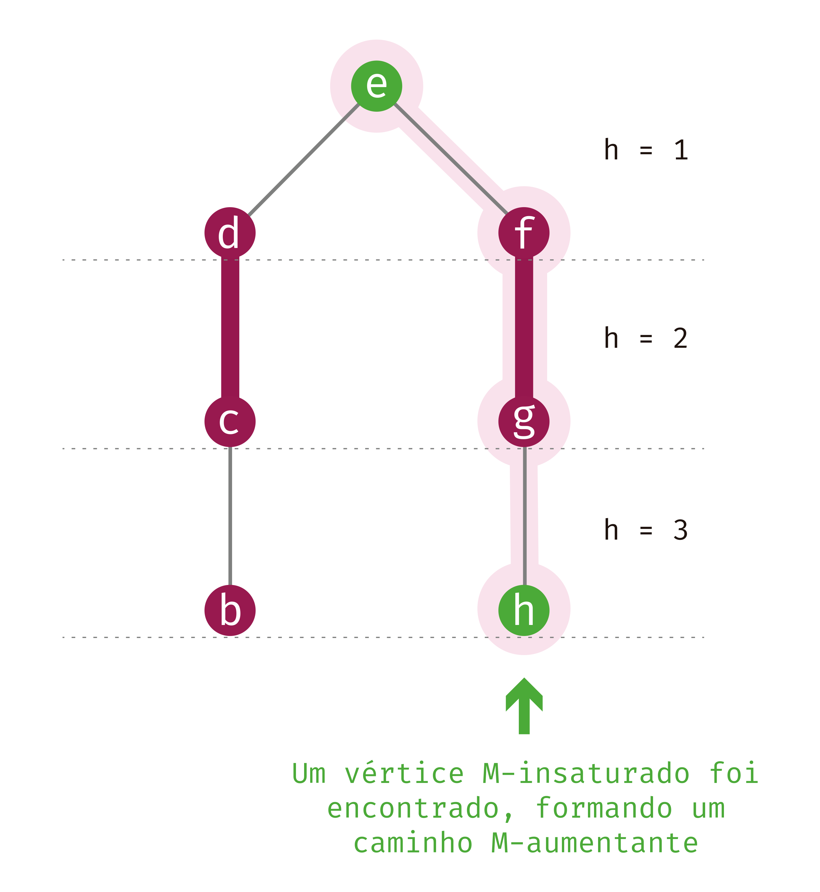

Algoritmo Blossom 🌸
Computando um emparelhamento máximo em grafos gerais em tempo $O(n^2m)$
18 de Junho de 2023 por Samuel Santos

Introdução
Imagine que você é um professor que vai passar uma atividade em dupla para uma turma. Você não quer que os alunos formem suas duplas sozinhos, mas você também não quer que um aluno fique em dupla com alguém que ele não tem afinidade. Para isso, você pede para cada um dos alunos uma lista dos colegas com quem eles ficariam confortáveis em fazer dupla. Para fins de simplificação, vamos assumir que as preferências são recíprocas.
Considere então o seguinte problema:
Problema
Se você possui alguma experiência em algoritmos ou estruturas de dados, você pode ter notado que este é um problema que pode ser modelado com grafos. Por exemplo:

Um grafo representando as afinidades entre uma turma de 6 alunos.
Levando em conta este grafo que representa as afinidades entre os alunos, nós podemos obter as seguintes duplas:

Ana fica em dupla com Isabel, Matheus com Arthur e Joaquim com Clara.
Nós temos 6 alunos e formamos 3 duplas! Se temos $n$ alunos e formamos $\frac{n}{2}$ duplas, é claro que formamos o número máximo de duplas possível. Portanto, o emparelhamento acima é um emparelhamento máximo.
Porém, nem sempre conseguimos formar $\frac{n}{2}$ duplas. Basta mudar um pouco a estrutura do grafo acima e veremos que não será mais possível formar 3 duplas. Veja, por exemplo, o grafo abaixo em que podemos formar apenas 2 duplas.

Poderíamos formar as duplas {Ana e Isabel, Joaquim e Clara}, porém Matheus e Arthur teriam que fazer dupla entre si mesmo sem afinidade entre eles. Veja que qualquer que seja a formação de duplas neste grafo, nunca conseguiremos fazer 3 duplas.
Existe um conceito na área de Teoria dos Grafos que captura exatamente o conceito de "formação de duplas" em um grafo: Emparelhamentos.
Observação: para este texto, consideramos um grafo como sendo uma 2-upla $G = (V, E)$, onde $V(G)$ é o conjunto de vértices e $E(G)$ é o conjunto de arestas do grafo $G$. Vamos também denotar $|V(G)| = n$ e $|E(G)| = m$. Além disso, utilizarei notações próprias da Teoria dos Grafos e assumirei a partir daqui que o leitor tem algum conhecimento (não muito, mas algum) da área de Algoritmos e Grafos.
Definição: Emparelhamento
Nos grafos mostrados anteriormente neste texto, temos os Emparelhamentos (1) {{Ana, Isabel}, {Matheus, Arthur}, {Clara, Joaquim}}; e (2) {{Ana, Isabel}, {Joaquim, Clara}}.
Já no grafo seguinte, o conjunto de arestas destacadas não forma um emparelhamento pois as arestas {Ana, Isabel} e {Ana, Arthur} compartilham o vértice Ana. Traduzindo isto para o nosso problema de formação de duplas, vértices compartilhados significariam que em vez de uma dupla, haveria um grupo de três ou mais alunos e não é isso que queremos.

Exemplo de um conjunto de arestas que não é um emparelhamento. Em vez de uma dupla, temos o trio {Ana, Arthur, Isabel}.
Utilizando agora o conceito de Emparelhamentos, podemos abstrair o problema e expressá-lo na forma de um problema equivalente em grafos gerais.
Problema: Emparelhamento Máximo
Primeiras Ideias
A ideia inicial sempre é a abordagem de força bruta. Para o nosso problema, um possível algoritmo de força bruta seria basicamente verificar todos os subconjuntos de arestas de $G$ em busca do maior que encontrarmos.
max <- -∞
para todo subconjunto S de E(G):
se S é um emparelhamento de G e |S| > max:
max <- |S|
retorne max
Esta abordagem tem complexidade $O(2^mm)$, pois temos $O(2^m)$ subconjuntos de arestas possíveis e para verificar se um conjunto é um emparelhamento levamos $O(m)$.
Porém, nós sabemos que todo emparelhamento possui tamanho no máximo $\frac{n}{2}$ e podemos utilizar esta informação para construir um algoritmo ainda de força bruta, mas com uma complexidade um pouco melhor.
max <- -∞
para todo subconjunto S de E(G) tal que |S| <= n/2:
se S é um emparelhamento de G e |S| > max:
max <- |S|
retorne max
Simplesmente adicionando a restrição ao tamanho do emparelhamento, conseguimos melhorar a complexidade para $O(2^{\frac{n}{2}}m)$. Porém, ainda é exponencial e cientistas da computação não gostam muito de funções exponenciais. Vamos explorar algumas propriedades de emparelhamentos para tentar melhorar nosso algoritmo.
Explorando Emparelhamentos
Os conceitos de saturação e insaturação de um vértice são muito úteis para sabermos quais vértices estão "disponíveis" para serem emparelhados.
Definição: Vértice Saturado
Definição: Vértice Insaturado

Os vértices Ana, Isabel, Clara e Joaquim estão saturados pois são incidentes a arestas do emparelhamento. Já Matheus e Arthur estão insaturados pois nenhuma de suas arestas está no emparelhamento.
Os conceitos de saturação e insaturação são úteis pois eles nos dizem quais vértices ainda poderiam ser emparelhados e quais não podem mais. Além disso, a partir deles nós podemos definir caminhos alternantes e caminhos aumentantes que nos serão bastante úteis mais para frente.
Definição: Caminho M-Alternante

Dado este grafo e este emparelhamento, o caminho $C =$ Isabel Ana Joaquim Clara é um caminho alternante.
Definição: Caminho M-Aumentante

Dado este grafo e este emparelhamento, o caminho $C =$ Matheus Clara Joaquim Arthur é um caminho alternante.
É interessante tentar perceber o por quê da nomeção de "caminho aumentante". Veja que se temos um caminho $M$-aumentante, podemos aumentar o tamanho de $M$ em uma unidade, removendo as arestas emparelhadas do caminho de $M$ e adicionando as não-emparelhadas em $M$.
Veja que na figura acima nós temos um emparelhamento de tamanho 2. Fazendo a operação descrita de trocar as arestas obtemos um emparelhamento de tamanho 3 para este mesmo grafo a partir do caminho aumentante:

Aumentando o emparelhamento em uma unidade a partir de um caminho aumentante.
Vamos provar que isto é válido para todo caminho aumentante.
Teorema 1
Prova. Primeiramente, veja que para qualquer emparelhamento $M$, todo caminho $M$-aumentante possui uma quantidade ímpar de arestas. Seja $C = v_1 v_2 \dots v_{k-1} v_k$ um caminho $M$-aumentante. Considere agora o caminho interno $C' = v_2 \dots v_{k-1}$. Como $C$ é um caminho $M$-aumentante, nós sabemos que os vértice $v_1$ e $v_k$ estão $M$-insaturados e portanto as arestas $\{v_1, v_2\}$ e $\{v_{k-1}, v_k\}$ não estão em $M$. É claro então que $\{v_2, v_3\}$ e $\{v_{k-2}, v_{k-1}\}$ devem estar em $M$. Porém, se $C'$ possui tamanho par, ou $\{v_2, v_3\}$ ou $\{v_{k-2}, v_{k-1}\}$ devem estar fora de $M$, o que não pode acontecer. Assim, $C'$ possui tamanho ímpar, logo $C$ também possui tamanho ímpar.
Agora, vamos à prova do Teorema 1 de fato. Vamos provar por indução no número de arestas (que chamarei de tamanho) do caminho $M$-aumentante.
Caso base: caminho $M$-aumentante de tamanho 1. Neste caso, o caminho só possui uma aresta $\{v_1, v_2\}$ que está fora de $M$ e ambos $v_1$ e $v_2$ estão $M$-insaturados. Assim, $M' = M \cup \{v_1, v_2\}$ é um emparelhamento válido de $G$ e $|M'| = |M| + 1$.
Passo indutivo. Assuma agora que nossa afirmação vale para caminhos $M$-aumentantes de tamanho $2k - 1$ e considere um caminho $M$-aumentante de tamanho $2k + 1$, digamos $C$.
Veja que $C$ contém um caminho M-aumentante de tamanho $2k - 3$, digamos $C'$. Obtemos $C'$ removendo de $C$ as duas primeiras e as duas últimas arestas. Em $E(C) \setminus E(C’)$ temos 2 arestas de $M$, digamos $\{u, v\}$ e $\{x, y\}$, e 2 arestas de $E(G) \setminus M$, digamos $\{w, v\}$ e $\{y, z\}$.

Exemplo de um caminho $C'$ contido em um caminho aumentante $C$.
Pela nossa hipótese indutiva, podemos obter um emparelhamento $M’$ de tamanho $|M’| = |M| + 1$ a partir de $C’$, porém $M’ \cup \{\{u, v\}, \{x, y\}\}$ não é um emparelhamento. Mas $M’’ = M’ \cup \{\{w, v\}, \{y, z\}\}$ é! Além disso, $|M''| = |M| + 1$. ⬛
A partir deste resultado do Teorema 1, temos o próximo Teorema que é a base de todo o nosso algoritmo: o Teorema de Berge.
Teorema 2: Teorema de Berge
Prova. [IDA] Suponha, por contradição, que $M$ é máximo e $G$ possui um caminho $M$-aumentante. Pelo Teorema 1, existe um emparelhamento $M’$ tal que $|M’| > |M|$.
[VOLTA] Suponha, por contradição, que $G$ não possui caminhos $M$-aumentantes, mas $M$ não é máximo. Seja então $M’$ um emparelhamento de G tal que $|M’| > |M|$. Seja $H = G[M \cup M']$ o grafo que contém apenas vértices $M$-saturados ou $M'$-saturados e arestas de $M$ ou $M'$.
Veja que cada vértice de $H$ pode ter no máximo uma aresta de $M$ e uma de $M'$ incidente a si, pois caso contrário ou $M$ ou $M'$ não seriam emparelhamentos. Portanto, $\Delta(H) \leq 2$. Além disso, $\delta(H) \geq 1$. Logo as componentes de $H$ são caminhos ou ciclos. Em particular, cada componente é de um dos seguintes três tipos:
- Ciclos pares com arestas alternando entre arestas de $M$ e arestas de $M'$.
- Caminhos pares com arestas alternando entre arestas de $M$ e arestas de $M'$, iniciando em uma aresta de um dos emparelhamentos e terminando em uma aresta do outro.
- Caminhos ímpares com arestas alternando entre arestas de $M$ e arestas de $M'$, iniciando e terminando em uma aresta de um mesmo emparelhamento.
Veja que $H$ não pode possuir ciclos ímpares, pois para isso seria necessário que duas arestas de um mesmo emparelhamento fossem incidentes a um mesmo vértice, o que não pode acontecer.

Tipos de componentes de $H$.
Veja que os ciclos pares e os caminhos pares possuem número igual de arestas de $M$ e $M'$. Mas como $|M'| > M$, é necessário existir então um caminho ímpar em $H$ que começa e termina com uma aresta de $M'$. Mas este caminho é exatamente um caminho $M$-aumentante de $G$! ⬛
Agora que temos o resultado do Teorema de Berge, podemos usá-lo para criar um novo algoritmo. Considere o seguinte:
def FIND_MAXIMUM_MATCHING(G, M):
P <- FIND_AUGMENTING_PATH(G, M)
se P == []:
retorne M
senão:
M <- M Δ E(P) #diferença simétrica
retorne FIND_MAXIMUM_MATCHING(G, M)
Nós iniciamos o algoritmo a partir de um emparelhamento qualquer de $G$. Note que $\emptyset$ é um emparelhamento válido para qualquer grafo. Iterativamente, buscamos por um caminho $M$-aumentante em $G$ e, caso exista, atualizamos $M$ até não existir mais nenhum caminho $M$-aumentante, garantindo que $M$ é máximo pelo Teorema de Berge.
Isso funciona? Bom, sim, funciona. Mas a questão é: como encontramos os caminhos aumentantes? Como implementar a função FIND_AUGMENTING_PATH?
A resposta é: podemos utilizar uma Busca em Largura (BFS) para encontrar caminhos
$M$-aumentantes. Mas precisamos alterar um pouco.
Como queremos encontrar caminhos $M$-aumentantes,
vamos iniciar o BFS pelos vértices $M$-insaturados de $G$ e
construir uma árvore em camadas, onde as camadas
ímpares contém arestas fora de $M$ e camadas pares
contém arestas de $M$. Considere, por exemplo, o seguinte grafo e seu emparelhamento:

Vamos iniciar o BFS a partir do vértice insaturado $e$. A árvore gerada pelo nosso BFS fica da seguinte maneira:

O vértice $e$ alcança $d$ e $f$ por arestas não-emparelhadas. Os pares de $d$ e $f$ são $c$ e $g$ respectivamente, portanto eles alcançam apenas estes vértices a partir de arestas de $M$. Os vértices $c$ e $d$ por sua vez alcançam $b$ e $h$ respectivamente por arestas fora de $M$.
Nós encontramos o vértice $h$ que está também $M$-insaturado através do nosso BFS modificado. Como a maneira que nosso $BFS$ funciona é realizando uma busca através de caminhos alternantes que inicia com um vértice $M$-insaturado, então quando encontramos um outro vértice $M$-insaturado durante a busca, sabemos que encontramos um caminho $M$-aumentante de $G$.

Caminho $M$-aumentante encontrado pelo nosso BFS.
Até agora, tudo ótimo. Nosso BFS realmente parece estar funcionando muito bem para identificar os caminhos $M$-aumentantes. Porém perceba que o grafo acima em que realizamos o BFS é um grafo bipartido, logo não contém nenhum ciclo ímpar. Mas o que acontece quando existe um ciclo ímpar no grafo? Vamos dar uma olhada nesse caso agora.